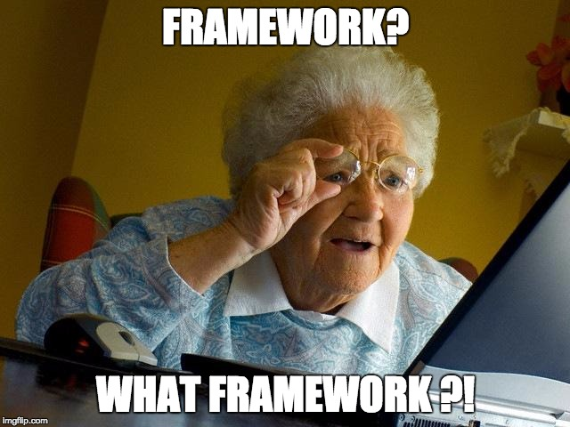

wallabag : comment on a migré vers Symfony 3
Par Jérémy Benoist (@j0k) et Nicolas Lœuillet (@nicosomb)
wallabag.org
Nous deux
 Jérémy Benoist lead developer chez 20minutes 
|
 Nicolas Lœuillet développeur chez Smile 
|
Plan
- Fonctionnalités et histoire
- Pourquoi ça n'était pas mieux avant
- Pourquoi c'est mieux maintenant
- Quelques benchmarks
- En route pour la v2
- Les difficultés
- Les étapes en cours
- Les étapes à venir
Fonctionnalités et histoire
Ce que ça fait
 |
 |
 |
 |
 |
|
Histoire

Pourquoi ça n'était pas mieux avant
Première version de "wallabag"

Environnement PHP
- PHP >= 5.3.3
- Pas de framework
- Des classes PHP de plusieurs centaines de lignes
Fréquence des mises à jour
- Pas de calendrier défini
- 10 versions mineures en deux ans
- Pas de vrai respect de SEMVER
Lacunes techniques
- Dépendances versionnées
- Pas d'API
- Pas de tests
- Pas de PR par l'équipe
- MAJ BDD manuelle
- Déploiement manuel via Filezilla 🙈
- Équipe de deux personnes
Pourquoi c'est mieux maintenant
Deuxième version de wallabag

Environnement PHP
- PHP >= 5.5.9
- Compatible PHP 7
- Compatible HHVM (même si personne ne s'en sert)
- Symfony 3
Fréquence des mises à jour
- Roadmap établie
- Respect de SEMVER
- Une version mineure tous les trois mois
On comble les lacunes techniques
-
Sorte de Definition of Done pour chaque commit :
- Documentation utilisateur
- Tests unitaires et fonctionnels
- Relecture des PRs
- Déploiement via Capistrano
- Migrations BDD
- Le moins d'actions manuelles possible
- Équipe plus conséquente : une core team, des traducteurs, des développeurs
API pour les applications externes
Facilite l'intégration avec des applications tierces

Quelques benchmarks
Analyse du code
| v1 | v2 | |
|---|---|---|
| Fichiers | 396 | 129 |
| Code | 94.922 lignes 240 lignes / fichier |
8.822 lignes 68 lignes / fichier |
| Commentaires | 37.855 lignes | 2.462 lignes |
| Sensio Insight | 29/100 2 ans pour la médaille Platinum |
32/100 3 semaines pour la médaille Platinum |
| Scrutinizer | 4,95/10 (1 erreur critique, +700 majeures) |
9,39/10 (4 erreurs majeures) |
Chargement des pages
Analyses faites avec Blackfire
| v1 | v2 | |
|---|---|---|
| Liste d'articles (460) | 330ms 17 Mo |
689ms 31 Mo |
| Un article | 89ms 10 Mo |
281ms 17 Mo |
| Liste des tags (20) | 85ms 10 Mo |
314ms 19 Mo |
En conclusion ...
C'est pas très fameux pour la v2 tout ça !
- Un framework, c'est lourd
- Le plain PHP c'est forcément rapide
- Pas trop focalisé sur la perf, pour le moment
En route pour la v2 !
Le choix du framework

Extraction de contenu
- LA principale fonctionnalité de wallabag
- Assuré par Full-Text RSS, dans la v1
- Pas vraiment open source ...
- Et pas très pratique à utiliser ...
// $ftr should be URL where you installed this application
$ftr = 'http://example.org/full-text-rss/';
$article = 'http://www.bbc.co.uk/news/world-europe-21936308';
$request = $ftr.'makefulltextfeed.php?format=json&url='.$article;
// Send HTTP request and get response
$result = @file_get_contents($request);
Extraction de contenu
- MAIS, sa capacité d'extraction est efficace !
- Utilise le microformat hNews
- Utilise les données de Schema.org
- Basée sur php-readability
- Et sur des site_config (dans un repo séparé)
➜ Forker en gardant cette logique
Extraction de contenu
- graby, un fork de Full-Text RSS v3.3
- Mise en place de test fonctionnels sur l'existant
- Ré-organisation / refonte
- SiteConfig chargé via composer
- Ajout de tests
- Et c'est plus propre à utiliser ...
use Graby\Graby;
$article = 'http://www.bbc.co.uk/news/world-europe-21936308';
$graby = new Graby();
$result = $graby->fetchContent($article);
La migration en soi
-
Par itération
- Le socle Symfony
- La connexion utilisateur
- La configuration
- La commande
wallabag:install - L'ajout d'un lien
- L'ajout de tags
- Etc.
- Globalement, tout a été réécrit
La migration en soi
- La v2 n'est pas ISO avec la v1
- v2.0.0 : focaliser sur le fonctionnement de base
- v2.0.x : focaliser sur la stabilité
- v2.x : amélioration des fonctionnalités (tag, recherche)
Librairies utilisées pour l'API
- RestBundle
- CorsBundle
- OAuthBundle
- HateoasBundle
- ApiDocBundle
Listing des features par librairie
- Utilisateur ➜ FosUserBundle
- Filtres ➜ FormFilterBundle
- Changement de thème ➜ LiipThemeBundle
- Export ➜ phpepub, tcpdf, php-mobi
- Règle de tagging ➜ RulerZ (😘 @KPhoen)
- Maintenance ➜ MaintenanceBundle
- Two factor authentication ➜ TwoFactorBundle
- Annotations ➜ AnnotatorJS
Les difficultés
Installation de l'application
L'application doit être disponible pour tout le monde !
- sur un serveur dédié
- sur un serveur mutualisé
- sur un ... raspberry (c'est pas gagné ...)
Et installable par tout le monde
"tout le monde" inclut des personnes novices
Installation de l'application
Plutôt basique pour la v1
composer create-project wallabag/wallabag . dev-master
ou
wget http://wllbg.org/latest
unzip latest
+ quelques lignes de SQL
Dans l'ensemble aucun souci ✅
Installation de l'application
Tentative n°1
git clone https://github.com/wallabag/wallabag.git -b v2
cd wallabag
composer install
php app/console wallabag:install
- Trop orienté dev
- Installe toutes les deps "dev"
- C'était bien au début ™
Installation de l'application
Tentative n°2
composer create-project wallabag/wallabag wallabag 2.0.0-alpha.1
cd wallabag
php app/console wallabag:install
- Toujours trop orienté dev
- Simple amélioration de la version précédente
Installation de l'application
Tentative n°3
SYMFONY_ENV=prod composer create-project wallabag/wallabag wallabag "2.0.*@alpha" --no-dev
cd wallabag
php app/console wallabag:install --env=prod
- Uniquement les packages de prod
- MAJ impossible à cause de
create-project
Installation de l'application
Tentative n°4 (l'actuelle)
git clone git@github.com:wallabag/wallabag.git
cd wallabag
git checkout 2.0.4
SYMFONY_ENV=prod composer install --no-dev -o --prefer-dist
php app/console wallabag:install --env=prod
- Toujours bien en version de prod
- Facilite la mise à jour (par les tags)
- Mais toujours des soucis de mémoire
Autres difficultés
- Les migrations de données SQLite
- Les demandes de SiteConfig
- Les issues de personnes pas très techniques 😕
Les étapes en cours
Les étapes en cours
- RabbitMQ, pour les gros traitements
- Elasticsearch, pour la recherche (si si)
- Gérer les dépendances CSS et JS via
Les étapes à venir
Les étapes à venir
- Un front en React
- Une solution SaaS
- Intégration dans des applis tierces
API : intégrations déjà réalisées
Trigger-Happy.eu : projet clone libre de IFTTT
API : intégrations déjà réalisées

API : intégrations déjà réalisées
- Application Windows Phone (Android et iOS en cours de réalisation)
- Addon pour Firefox
- ttrss-to-wallabag-v2 : plugin pour ajouter dans wallabag depuis Tiny Tiny RSS
- Librairies Python, Java et .NET
API : intégrations souhaitées
- Cozy Cloud
- ownCloud
- Fabricants de liseuses